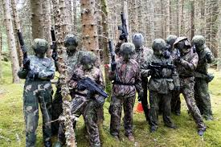
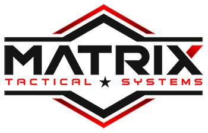
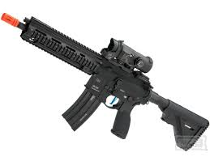
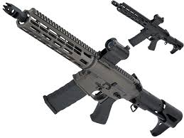
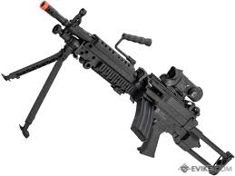
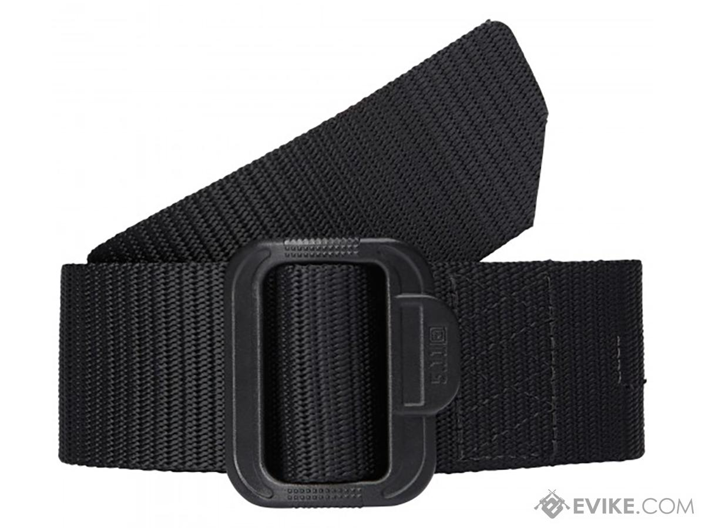

Airsoft is a competitive team shooting sport in which participants eliminate opposing players by tagging them out of
play with spherical plastic projectiles launched via replica air weapons called airsoft guns.
Although very similar to paintball in concept and gameplay, airsoft pellets do not typically leave visible markings on
their target, and hits are not always apparent. Though the pellets can sometimes leave red contusions or "welts" on
exposed skin, the game relies heavily on an honor system in which the player who has been hit is ethically obliged to
call themselves out. The airsoft guns used are mostly magazine-fed, with some having manual/battery-powered spring-piston pump powerplants
similar to Nerf Blasters, or pneumatically powered by replaceable compressed gas (e.g. propane ("green gas"),
1,1,1,2-tetrafluoroethane or CO2) canisters. Many airsoft guns also have mounting platforms compatible with genuine
firearm accessories, and cosmetically more resembling real firearms. This makes them popular for military simulation and
historical reenactments. There are also professional gun safety and weapon manipulation trainings conducted with airsoft
in some fields, such as law enforcement trainings, due to better safety and lower cost. The United States Coast
Guard, for instance, has officially adopted airsoft for training in 2018.
Top Brands/Websites
Evike.com: Evike.com is uniquely positioned to bring you the best retail experience in the Airsoft industry. As front runner in the industry, our relationship with vendors, manufacturers and license holders allows for us to give the shopper an unparalleled selection of top quality products at the most competitive prices. With the latest technology and innovative processes, Evike.com is able to deliver the products you need, wherever that may be, quickly and efficiently.
Evike.com
Matrix: Established in 2001 for Airsofters by Airsofters. Team Matrix thrive on the vision to better the sport of Airsoft with affordable high quality Airsoft equipment. With decades of experiences as Airsoft enthusiasts ourselves, we live, sleep, and breathe Airsoft. Matrix offers a wide selection of skirmish grade replicas from rifles to pistols, a wide variety of accessories, and tactical equipment from helmets to boots. It is the Matrix mission to prepare every Airsoft shooter the perfect experience!

Best Airsoft Guns
ASG Scorpion Evo ATEK: The ASG Scorpion EVO is a unique gun both internally and externally. As if the design wasn’t fantastic already, the new ATEK kit includes a modified MLOK rail system, angled grip, and an extended magwell with an extended mag release lever, which makes a great design even better.
The gun features Empty Magazine Detection, a Functional Bolt Catch, and Ambidextrous Controls. For the internals, this gun has features such as a Quick Change Spring, 3 Round Burst, and Automated Internal Failure Detection. The Quick Change Spring allows you set up the gun as a fantastic indoor SMG, or a high powered marksman rifle. The Evo’s mosfet is programmable, allowing for a three round burst setting. The Internal Failure Detection System lets you know if anything goes wrong, and helps prevent causing further issues like stripping a piston. ASG has built a unique and groundbreaking gun, and the evo deserves a spot on this list for combining realistic functionality with high performance. (Prices Range From: $350 - $450)

The HK 416 A5 AEG: is a licensed, authentic replica of the real 416 A5 rifle made by world renowned firearms manufacturer Heckler & Koch. Favored by Special Forces for its Over The Beach (OTB) capability and remarkable reliability, the H&K 416 is a proven weapons platform that features all the improvements of a modern rifle coupled with the familiarity of a proven weapons system.
With the VFC H&K 416A5 Airsoft AEG as a base, this Evike Performance Shop build focuses on making the VFC Avalon gearbox (which is already a great gearbox) into something more high performance. With our tuned gearbox featuring a Gate TITAN Mosfet unit, and Prometheus high speed gears with Lonex Helical bevel and pinion gears; this Evike Performance Shop 416A5 pushes BBs out at a consistent 350 Feet Per Second.
Every Evike Performance Shop custom built Airsoft rifle will come with an extended 90-day warranty period featuring the same level of full support we provide with our regular standard 45-day warranty, with the exception of standard wear and tear.
Due to the nature of every Evike Performance Shop build; please allow up to 5 business days after your order has been placed so our techs can assemble and quality control your new rifle.

M13 Designed to showcase their new, in house designed handguard, the Phantom Extremis by APS is the ideal Airsoft AEG for any airsoft sport, from weekend skirmishes to competitive shooting, the Phantom Extremis is designed to perform in any environment. Loaded with other small touches such as ambidextrous fire controls, enhanced charging handles and machined lightening cuts, the Phantom Extremis takes on the look of some of todays most popular competitive shooting rifles.
When APS set out to develop the Silver Edge gearbox, they wanted to bring to market an ultra-smooth, low amperage draw, ultra-reliable system with huge upgrade potential. The newest iteration of the Silver Edge gearbox named eSilver Edge takes everything that made the original great and improves upon it.
The newly developed advanced S.D.U™ (Super Dynamic Unit) chipset monitors the amperage draw from shot to shot and will cut power to the gearbox if the current spikes too high before damage can be done to your gun.
To improve trigger performance, the eSilver Edge gearbox features a micro switch trigger which works together with the S.D.U.™ chipset for near instantaneous trigger response (as fast as 0.02 seconds). When combined with a short stroked trigger, users can achieve an incredible semi-auto rate of fire.

M249: The A&K M249 "Middleweight" series falls in between the Standard M249's and the M249 Featherweight by shedding weight in key areas to reduce each guns weight by several pounds. Middleweight M249's still retain A&K M249 gearboxes keeping them compatible with all A&K M249 compatible gearbox parts. All Middleweight M249's feature a high strength polymer receiver, dust cover, handguard, heat shield and gas block along with aluminum outer barrel, steel carry handle and steel folding bipod.

Best Airsoft Equipment
Airsoft Wall Rack: The ultimate in modular gun wall storage, our gun wall bundle is the perfect solution to hold all your guns and shooting gear. Made from durable heavy duty aluminum, the strongwall panels safely hold the weight of all your firearms. As shown, the setup holds 6 rifles and 6 handguns, but has the ability to be customized to store more guns with the purchase of additional rifle and pistol hangers. The wall includes a steel shelf at bottom right corner, perfect for holding all your ammo, suppressors, and other gun gear. Modular and customizable, the HD90 allows you to move your firearms around to your preferred set up.

Matrix Vest: The Matrix Level-1 series of vests is a new family of low profile plate carriers that takes many of the popular design cues of the best selling vests on the market and makes them more efficient and user friendly. Designed to accept large size 9"x12" dummy SAPI plates, the Level-1 is compatible with a wide variety of training and mock SAPI plates as well as certain hydration plates. Up front is a triple magazine pouch that has come to be expected on most low profile plate carriers as well as a full compliment of MOLLE webbing for easy addition of more pouches. Where the Level-1 differs from other vests is in the cummerbund. Where most low profile plate carriers use a hook and loop skeletonized cummerbund, the Level-1 utilizes a tri-buckle design that offers the user easier donning and doffing, as well as a wider range of individual sizing adjustments. The Level-1 is a low profile all in one plate carrier solution at a price point any player can afford.

5.11 Tactical TDU Belt: A quick and convenient tactical or patrol belt that excels in a wide range of environments, our 1.75 TDU® Belt can be quickly converted into a secure tie down or secondary carry strap. Crafted from rip-resistant nylon, the 5.11® TDU® belt incorporates a durable non-metallic buckle that won't set off metal detectors. Ergonomic, affordable, and highly functional, the TDU® Belt is a versatile addition to your tactical or duty wardrobe.
"